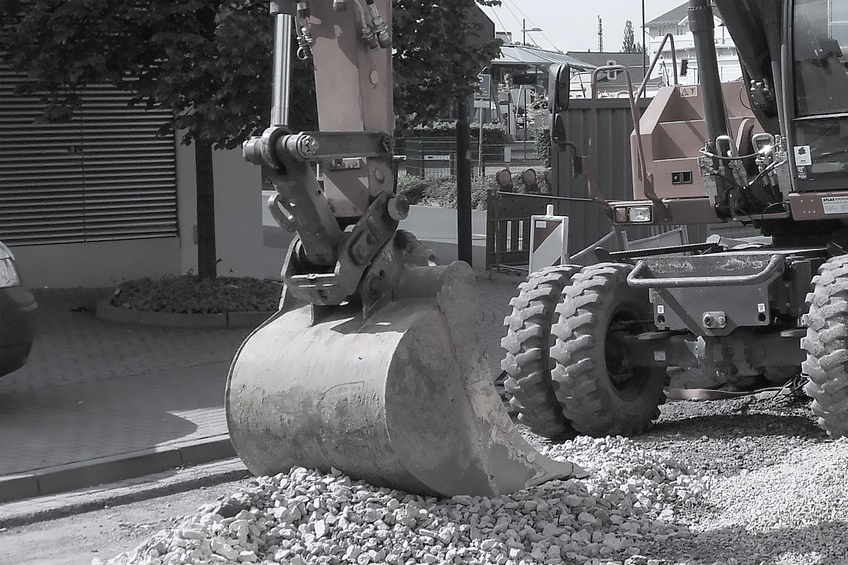

ВАШ БИЗНЕС ПОД КОНТРОЛЕМ!
У вас нет возможности контролировать технику и работников?
Водители решают личные проблемы в рабочее время?
Контрагенты недовольны и грозят разорвать договорные отношения?
Мы предлагаем решение проблем с установкой ГЛОНАСС/GPS-терминалов.
Водители решают личные проблемы в рабочее время?
Контрагенты недовольны и грозят разорвать договорные отношения?
Какие задачи помогает решить система ГЛОНАСС/GPS:
- постоянный контроль местоположения и передвижения машин;
- вы будете знать точное количество израсходованного топлива, средние показатели расхода, объёмы, когда и где были сливы и заправки;
- отчёты о фактическом посещении клиентов и контрагентов, а также о времени погрузок и выгрузок строительных материалов;
- отчёты о фактическом посещении клиентов и контрагентов, а также о времени погрузок и выгрузок строительных материалов;

Как это работает?
На каждый контролируемый объект (трактор, грузовик, автокран, экскаватор,
бульдозёр и др. строительную технику) устанавливаем систему
наблюдения с GPS-датчиками.
Какие датчики можно установить вместе с системой:
- датчик работы механизмов, который позволяет контролировать положение и перемещения механических узлов. Вы сможете контролировать работу стрелы крана, бочки бетономешалки, экскаватора и другого строительного оборудования;
- датчик гидравлики для контроля давления в гидравлических системах;
- датчик моточасов, определяющий колебания и вибрации корпуса прибора, позволит определить время работы техники;
- датчик поднятия кузова, который даст информацию о выгрузке-загрузке самосвала.
На ваш сервер будут приходить показания датчиков. Вам необходимо будет только создать личный кабинет, и вы сможете получать всю необходимую информацию. Доступ будет предоставлен с любого интернет-устройства.
Что вы получаете
- Возможность увидеть на карте все контролируемые объекты, что даст вам возможность пресечь нецелевое использование техники.
- Контролируя активную работу техники и технологические перерывы, вы сможете пресечь имитацию работы со стороны сотрудников.
- Вы всегда будете знать, когда транспорт пересечёт зону контроля.
- Экономию за счёт соблюдения норм эксплуатации техники. Возможность произвести плановое ТО и заменить механизмы, учитывая реально отработанные моточасы.
- Информацию о сливе топлива, благодаря контролю уровня горючего в баке. Хищение топлива теперь в прошлом.
- Информацию о простое в работе и о длительном простое техники на холостом ходу.
- Информацию о проценте загруженности техники на конкретном объекте (по часам, дням и сменам) для оценки эффективного использования.
- Вы сможете оперативно среагировать на внештатную ситуацию благодаря моментальному оповещению системы Глонас/GPS.В уведомлении будут вся информация по проблемному объекту с его точным местоположением (отметкой на карте).
Какие задачи помогает решить система ГЛОНАСС/GPS:
- постоянный контроль местоположения и передвижения машин;
- вы будете знать точное количество израсходованного топлива, средние показатели расхода, объёмы, когда и где были сливы и заправки;
- отчёты о фактическом посещении клиентов и контрагентов, а также о времени погрузок и выгрузок строительных материалов;
- отчёты о фактическом посещении клиентов и контрагентов, а также о времени погрузок и выгрузок строительных материалов;
Весь комплекс позволит вам знать,
сколько фактическиработает каждая единица автопарка.
Звоните
Мы разработаем
индивидуальное решение
и установим необходимое оборудованиеВаша техника под контролем!
и установим необходимое оборудованиеВаша техника под контролем!